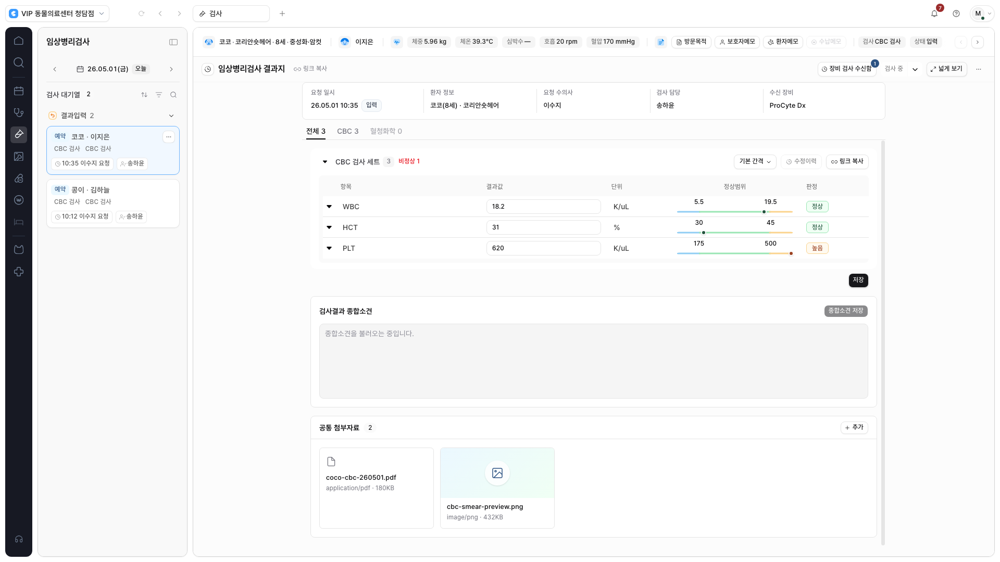
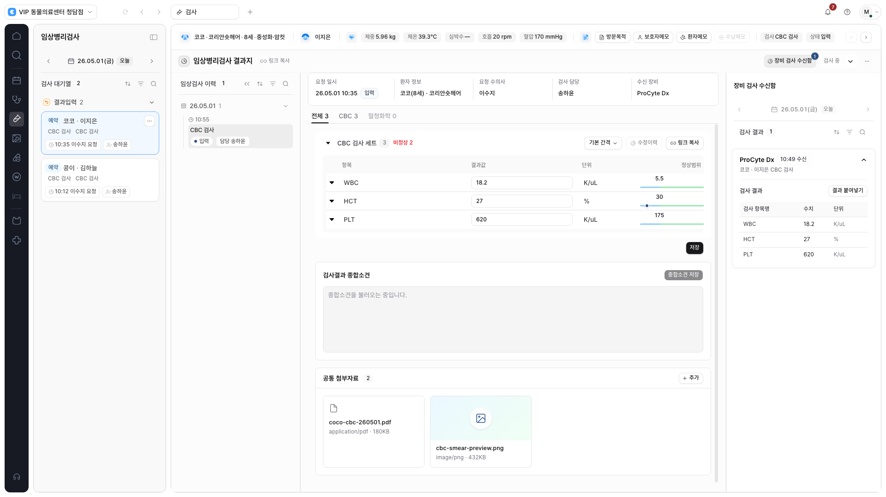
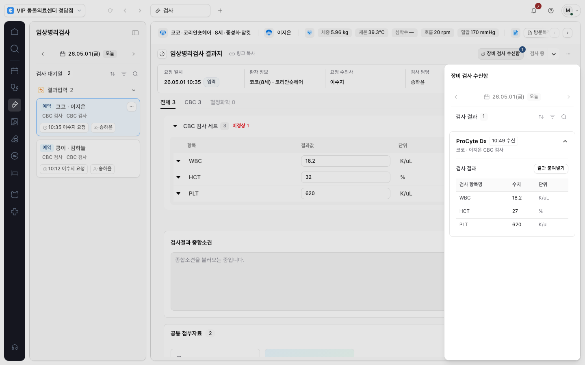
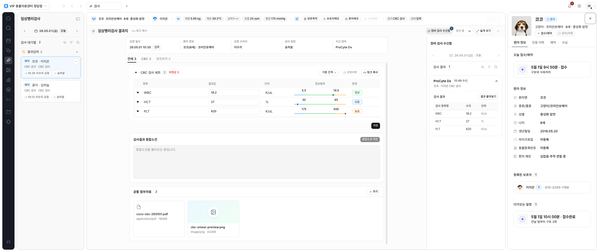

CLAiR · 2026.09.29 · APP-SHELL-PR-002
임상검사 폭 전환과
양방향 내부 패널을 적용했습니다.
로컬 구현 · 화면 검토 대기
결과지를 읽기 편한 폭으로 모으고, 필요할 때 넓게 펼칠 수 있습니다. 검사 이력은 왼쪽, 장비 검사 수신함은 오른쪽에서 열리며 환자 프로필과 함께 사용할 수 있습니다.
미리보기는 로컬 서버의 합성 데이터 화면입니다. 운영 서비스에는 배포하지 않았습니다.
승인한 기준을 실제 화면에 반영
1,120px임상검사 좁게 보기의 최대 폭
실제 남은 공간화면 해상도 대신 문서 사용 가능 폭으로 버튼 표시
180ms좁게·넓게 전환, 모션 감소 설정에서는 즉시 전환
| 항목 | 적용한 동작 |
|---|---|
| 버튼 표시 | 대기열·프로필·열린 패널·여백을 제외한 문서 공간이 1,120px보다 넓을 때만 표시합니다. 공간이 줄어 버튼이 숨겨져도 선택한 모드는 유지합니다. |
| 패널 위치 | 환자 헤더와 문서 툴바 아래에서 검사 이력 280px, 수신함 336px을 표시합니다. 프로필은 기존 바깥쪽 위치를 유지합니다. |
| 좁은 화면 | 중앙 공간을 보호하기 위해 최근 연 패널 하나를 겹쳐 표시합니다. Escape로 닫고 열기 버튼으로 포커스를 되돌립니다. |
| 작성 내용 | 폭 전환·패널 표시 방식 변경 중 입력값과 스크롤을 유지합니다. 검사 결과 저장과 장비 결과 붙여넣기의 기존 처리 방식은 유지했습니다. |
실제 구현 화면
아래는 합성 데이터를 사용한 앱 캡처입니다.


1440px의 좁은 공간 대응 보기

프로필과 수신함을 함께 보는 2560px 화면

검증과 적용 범위
브라우저 검증 18개 · 변경 파일 ESLint · TypeScript · 빌드 · 문서 링크 · 비밀정보 패턴 검사 통과
- 1366·1440·1600·1920·2560px 및 200% 확대에 해당하는 960px 레이아웃을 확인합니다.
- 입력·스크롤 보존, 빠른 폭 전환, 모션 감소, 패널 포커스 순환·Escape, 수신함의 중첩 확인창을 검증합니다.
- 프로필 공존, 검사 입력·수신함, 합성 응답을 이용한 라이브 형식/빈 결과 화면, 다른 모듈의 기존 패널을 회귀 검증합니다.
이번 구현은 공통 기반과 임상검사 첫 적용까지입니다. 진료/차트·조제/처치·영상·수납은 각 화면의 표·뷰어·업무 동작에 맞춘 적용이 남아 있습니다. 실제 임상 업무에서의 읽기 편의성은 사용 검토가 필요합니다.
기존 작업 파일은 보존하고 별도 작업 공간에 구현했습니다. 새 의존성이나 데이터베이스 변경은 없습니다.